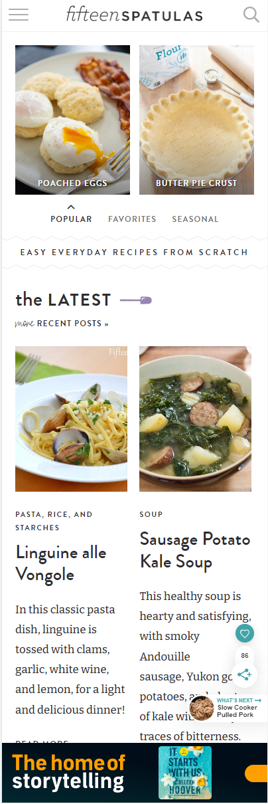
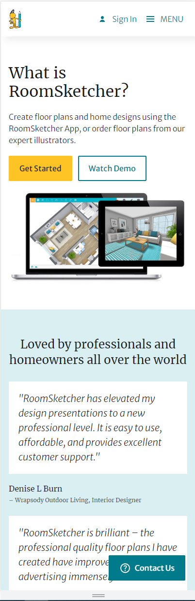

Design Principles Document
Laura Billman
This is a great example of how contrast in color makes the different elements stand out on the page and the colors compliment each other.

This website has repetition as it has consistent elements which help in the overall flow of the website and make it easy to navigate.

Room Sketcher shows how the White space and clean design make a website have simplicity and makes everything readable.